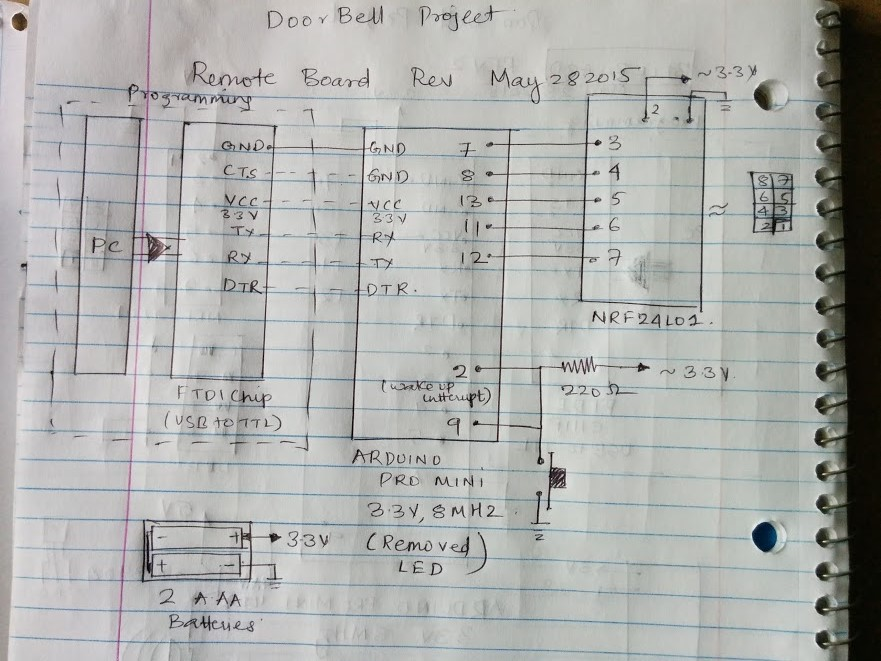
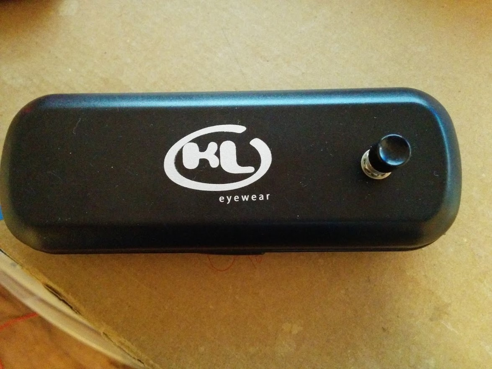
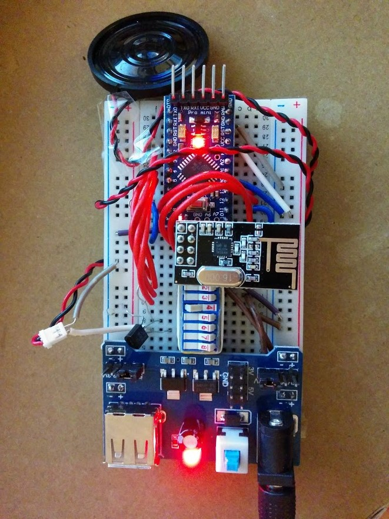

Doorbell with NRF24L01 and Arduino
Posted on Fri 29 May 2015 in Electronics
My current apartment does not have a doorbell (Its strange but it is true). I went ahead and built a doorbell using two arduino pro-minis and two NRF24L01 transceivers. The melody to be played when a guest presses a button can also be controlled. I have four melodies programmed in.
Here it is in full action:
Here are some details:
Remote
The schematic for the remote is shown below. The remote is configured to run on 2 AAA batteries and goes to sleep mode most of the time and then wakes up when a guest presses the button. This button press is transmitted to an NRF24L01 receiver on the doorbell by a NRF24L01 tranmisster. I decreased the overall current to 65 microA by removing the LED on the arduino pro mini and used rocket library's sleep functions. This arduino pro mini was running at 3.3V and 8 MHz. Could have gone even further in current reduction by removing the board regulator, but I was happy with 65 microAmps. For AAA batteries, assuming 1000 mAh capacity, it should last around 20 months.
Here are some pictures of the remote. I enclosed it in a eye wear case, which turned out to be a nice enclosure.



Doorbell
The schematic for the doorbell is shown below. This circuit is powered by 9V adapter from AC mains, which is converted to a 5V and 3.3V by ICSA009 breadboard adapter. I use 3.3V to power the arduino pro-mini and NRF2L01 receiver. Other than that, nothing fancy here, but I have four doorbell melodies on the arduino that can be chosen with a DIP switch.
Connecting buzzer directly to the arduino resulted in very less volume since arduino could source much current, so I connected it to 5V supply with 2N3409 transitor. The base of the transistor is controlled by an arduino pin in series with a 100 ohm resistor. I placed the whole breadboard into a food storage container as a case.
Here are some photos of the final prototype.

